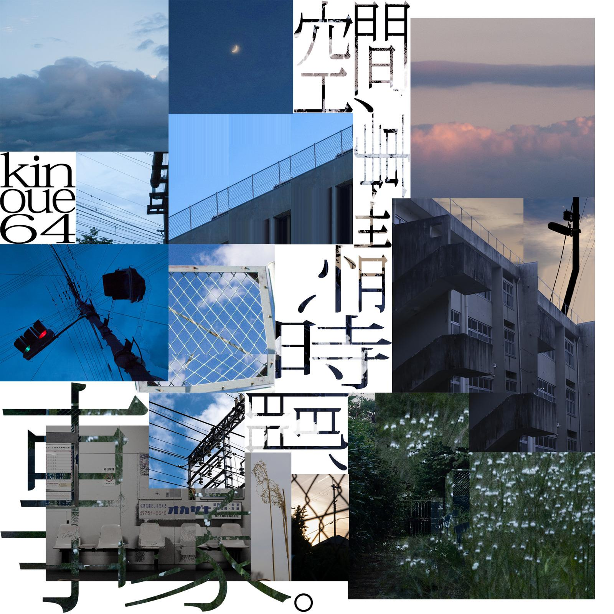
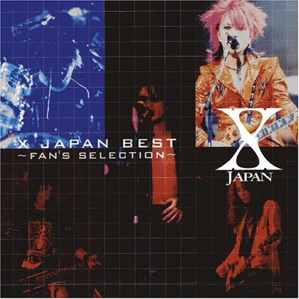
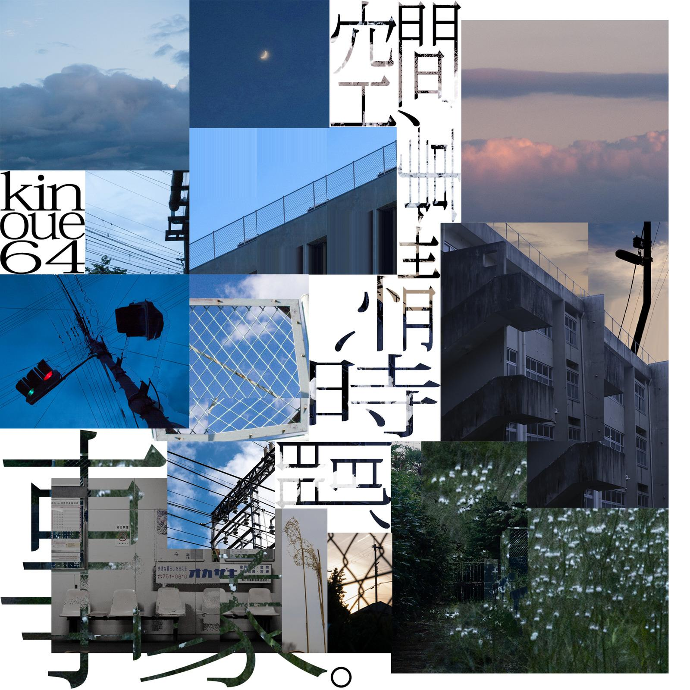
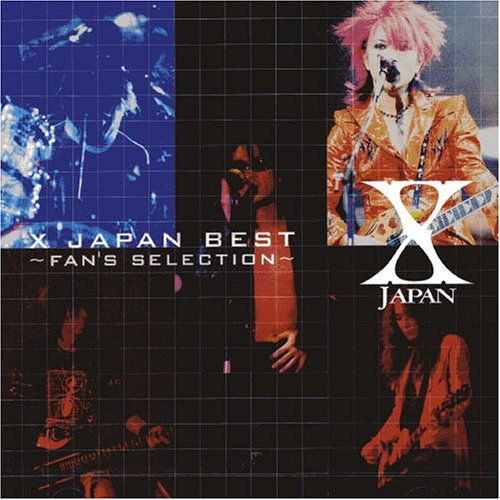
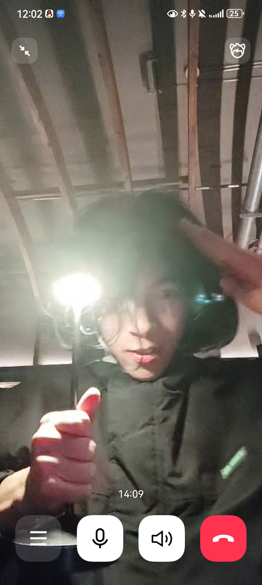
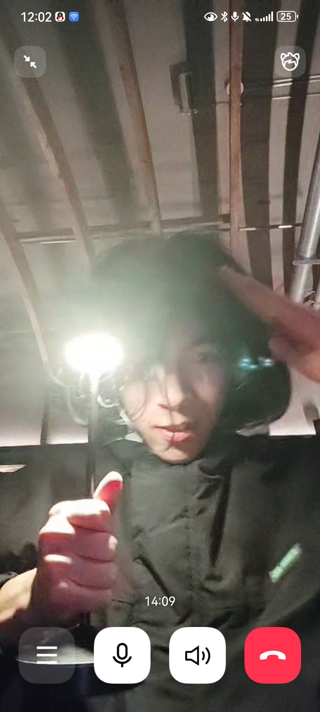

乐队家人
总算排了两个月的曲子演了
有点意外，但，其实觉得更多的心情更像是，爱乐队、喜欢乐队里的家人们一样的存在。。。
“原来你有这么多乐队好朋友”，演出前一天晚上，抹茶哈基猫这么说。于是反应过来，入学之后，真正构建起来的社交圈， 在神秘企鹅和绿泡泡联系方式分到了“大学”这一类别，七成之上结识的对象或多或少，与乐队有难以忽视的联系。
首先是清璇和pu老大，其实完全可以说没有清璇就没有现在的鼓手Jiooob(详见:问Jiooob去)，pu老大很好地给我加入了终电大家庭， 和wwy都是，呃，要不然你去看看老大回来了。
小王起初给我的印象就是地雷男(笑)，还留长发，和puwwy一起辩论见证，打舞萌，od，割手手，而且跟不健全地雷妹谈恋爱。噢，他也是果园的。 然而真的小王其实都和大家一样好。
然后是q0，全称akirei，即超级画师，超级主唱，超级老大。说实话，第一次见到q0，第一次到本部地下室排练、吃饭， 最后回到沙河，我最终没有记住q0的脸。对不起老大。 不过q0，看上去小小的（？，但实际上要厉害得多，虽然她本人不一定这么认为。。。不过很容易人多困惑害怕。？ 小胃袋，而且在省钱这部分上跟小王差不多，我真怕她哪天会营养不良似掉。 昨晚最终知道了q0的名字，欧耶
最后是王神、网申、二次元高手、吉他大神、黑屁巨魔。虽然平时看起来素质屌差，但是实际上是很好的人
不管怎样，我呆在乐队开心的时候，和wwyq0大小王pu也非常好。
还有卡通、颜午、yyt、马哥、飞白、西萌、mna......
我的梦里都是乐队了。。。
演出 | 大酒
我靠，演完了，我真的困在了1122的那个晚上，我爱乐队，我爱大家。。。。
全程几乎没有抬头，飞白的谱架立在炸镲与踩镲的缝隙，透过长发我能清晰看到。wwyq0卡通大小王都等着我的鼓点，所以我很难抬头走神。 全程只听得见dsl的q0，间间事事的wwy小王，rain的卡通wwy。。。
没人朝我们扔水瓶
这是歌单
 



大酒 & Jiooob没有小虎队
太好了，又可以喝大酒
北平机器外面很冷，或者说北京晚上很冷，两杯大酒没有烫伤我的脸，但当我站起来，鼓手引以为傲的的小脑冻上了双腿
然后真的记忆模糊，回到宿舍酒醒才回忆
想知道Jio喝醉会说什么吗？那就下次和Jio一起喝酒吧！
 

喝完之后他们去了小虎队，我被飞白和马哥送到了宿舍